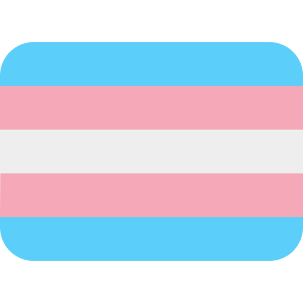

Cesargw121 (Cesar)
 Cesar Twitter
Cesar Twitter
Hi 👋, I'm César, Nonix's administrator and friend. I'm a bit reserved and don't usually talk much.
About me: I'm from Peru 🇵🇪. I personally don't play many games beyond Cities: Skylines, Phasmophobia, Euro Truck, and of course, playing with Nonix and the rest of the team. I like Chinese and Peruvian food, and Inca Kola.
About me: I'm from Peru 🇵🇪. I personally don't play many games beyond Cities: Skylines, Phasmophobia, Euro Truck, and of course, playing with Nonix and the rest of the team. I like Chinese and Peruvian food, and Inca Kola.

Katzuna
Hi, I'm Katzuna, one of the Administrators of the YouTube channel, one of the Owners of the Discord server, and a friend of Nonix.
When it comes to moderation, I like when people follow the rules; if there are clear rules, I'll do everything possible to ensure everyone adheres to them strictly (although I try not to come across as too severe so that no one feels uncomfortable speaking in chat when I'm around).
And about me: I'm from Chile, and I speak Spanish and English (although I prefer Spanish). I enjoy playing video games like Minecraft (especially doing stuff with commands and datapacks), Geometry Dash, Phasmophobia, Ultrakill, The Binding of Isaac, Celeste, Undertale/Deltarune, and, on rare occasions, Fortnite and PUBG (only with my friends, as I don't really like that kind of game). I also like subjects such as maths, chemistry, and physics, among others. I'm not really a fan of listening to music or watching series or movies. I consider myself a pretty boring and bad-tempered person, although I'm trying to change. I really don't like using my voice, so if you see me in a voice channel or something similar, don't expect me to speak. I prefer writing and using a bot that reads what I write.
When it comes to moderation, I like when people follow the rules; if there are clear rules, I'll do everything possible to ensure everyone adheres to them strictly (although I try not to come across as too severe so that no one feels uncomfortable speaking in chat when I'm around).
And about me: I'm from Chile, and I speak Spanish and English (although I prefer Spanish). I enjoy playing video games like Minecraft (especially doing stuff with commands and datapacks), Geometry Dash, Phasmophobia, Ultrakill, The Binding of Isaac, Celeste, Undertale/Deltarune, and, on rare occasions, Fortnite and PUBG (only with my friends, as I don't really like that kind of game). I also like subjects such as maths, chemistry, and physics, among others. I'm not really a fan of listening to music or watching series or movies. I consider myself a pretty boring and bad-tempered person, although I'm trying to change. I really don't like using my voice, so if you see me in a voice channel or something similar, don't expect me to speak. I prefer writing and using a bot that reads what I write.
Darwin/Drwn
Once upon a time, there was a man named Nodarwin. He saw a cartoon called "The Amazing World of Gumball." Since his favorite character is Darwin, he gave himself that username, and that's what they call him today. Most importantly, I like Pastel de papa.

Elias
Hi I'm Elias, mod of Nonix. About me: I'm from Argentina, and I speak Spanish and English. I don't play many games bcs my trash PC and I'm so dumb I spent my money on gambling and an air fry whatever is spelled. Addict to Osu, travestis, Tboi and Geometry Dash porn. I like Mandarina, travestis, trans, furrys, sisters and I hate school.